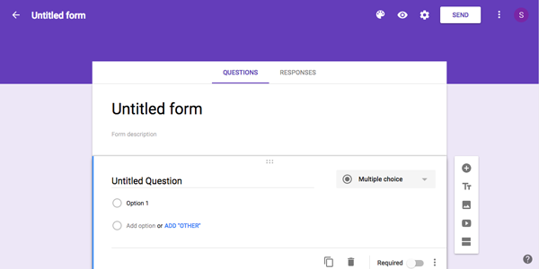

Feburary 21, 2017
Studio 5 - Meet Me At The Library
The user interface I will be evaluating today is the interface of my studio 5 assignment called "Meet Me At The Library."
I decided to relate my studio 5 idea with an idea I have for our final project to submit to ISEA.
I decided change my ISEA topic to endangered species, therefore I have these "button" illustrated images. When you mouse over the illustration, the illustration pulses using a css library called Hover.css.
This was an idea I had to give
my website more user interaction and feedback for the user that they can click on it later to reveal an info sheet about the respective animal. It took me a while to figure out how to do what I want, and I had to look at the authors source code on the actual example pages to figure everything out.
I also wanted to incorporate a loading bar, and I did that with a js library called processbar.js.
I wanted the progress bar to load into different colors based on the level of endangerment, which is categorized into 5 levels on the
World Wildlife website, and each color and percentage the bar will be at indicated the level of endangerment. The idea is that this will load on the info fact sheet that would pop up or appear with the info fact sheet, and the info fact sheet
would appear when mouseover or mousedown on the illustrated image. The author made it easier to figure out this time by allowing people to edit the specific progess bar they liked using JS Fiddle.
Feburary 13, 2017
Studio 4 - Time Is On My Side
The user interface I will be evaluating today is the interface of my studio 4 assignment called "Time Is On My Side."
I decided to go with the alternative of the assignment, which was to make a Valentines Day themed website using the required techniques.
I decided to make candy hearts inspired by an example we did in class. I illustrated the candy hearts and put unfinished phrases that could be innuendos to make it more funny and unique. I added a cute quirky alert to direct the user more
on how to use my website and also to tap into like an old school valentines day internet gram/playlist you may receive and just make it more visually modern, simple, and clean.
When the user scrolls over each illustration, it reveals 3 different tooltips helping the user identify what each unfinished phrase on the candy heart meant and to help the user identify what audio they are listening to. The tooltips are
placed on a pink background for the user to better understand that when you roll over the illustrations, it is easier to understand the interface. I decided to use the tooltips as a way to describe the songs availble to play on demand inspired
by each candy heart and also give credit to each song and artist effectively and cleanly.
Feburary 7, 2017
Studio 3 - The Archive
The user interface I will be evaluating today is the interface of my studio 3 assignment called "The Archive."
I decided to do an archive of the five allergies that effect me the most everyday. To depict these allergies in a user friendly way, I made simple, relatable, and rocognizable illustrations using Adobe Illustrator CC. I decided to go with
a simple and straight forward name for my page "The Archive of Allergies" so that my user knows straight away that these are things that people are allergic to in general as well. I kept it just a simple title and simple, but well drawn illustrations
so that the user does not get overwhelmed by too many things at once.
When the user scrolls over each illustration, it reveals a small slightly transparent description/journal entry with a neutral complementary colored background (to differentiate each allergy when you mouse over each illustration) in white
text (better legibility and aesthetic in my opinion in this case) about how the allergy has effected me and my thoughts and feelings about the allergy. I chose to simply just use mouseover anf mouseout commands because I thought it was all I really
needed for my design to add some interactivity, and also it was within my capabilities and time contraints. I also didn't want to do too much and overstimulate or confuse the users or myself.
I had a little trouble organizing my mouseovers it seems as the middle 3 images still need some work so that the description appears once the mouseovers over the image rather than when the mouseover unders the image slightly... I found it
strange that the two images on the side mouse over fine. I would also like to figure out how to fix up the spacing of the descriptions when they appear as well.
January 24, 2016
Form Interface Review
The user interface I will be evaluating today is the main interface of Google Forms using Bill Derouchey's article/slideshow on interface design.

Google forms is a free popular website and is used globally and across all system platforms to create simple and easily navigated forms.
I personally use google forms as my main way of creative simple and easy to share evaluation forms. I think google forms has a great example of use of hierarchy, as discussed by Derouchey's slideshow, to direct the user how to create a google
form without having to think too much as the layout uses a top to bottom flow.
Google forms starts out in a neutral purple scheme, and you can modify the scheme, allowing users to customize the form to their liking and make it even more direct to the user's audience what kind of form this is without having to make the
form text heavy. You immediately see that google form works top down by asking you to name your document, form, and then start adding types of questions, and adding, duplicating, or editing questions from there. The form mainly uses universal
and intuitive icons along with simple text instructions to indicate what the user should do at each step/section of the form such as providing text examples for the where the "form description" should be written and placed. These editing tools
also allows the user to really customize their forms to their liking as you can modify the font and question types to adding images, videos, and new sections for questions in the same form.
Google forms also uses what Derouchey describes as zoning as google forms highlights sections you are working on with a thin blue bar and uses depth techinques to make the section you are working on "pop up" when ou click on a section you
want to work on. The hierarchy of the text on the interface and the color of the text also helps users see what is the most important information to fill in and distinguish that there are different zones and sections to add different information.
Overall, google form's ability to maintain the ideas of simplicity in its design, perspective in its option to allow users to see it in the perspective of its audience, and restraint in its functional options, as described by Derouchey, makes
google form's purpose of being an easy to create, read, navigate, and share web-based form clear and evident.
January 12, 2017
User Interface Review
The user interface I will be evaluating today is the main interface of Facebook when you log into your Facebook.
Facebook is a popular social media website that is used globally and across all system platforms.
In terms of the visual design of Facebook, Facebook has a simple and neutral color pallette that includes primarily blacks, grays, blues and whites. facebook has organized its layouts primarily in columns. Facebook uses simple colored icon
designs to further aid users in identifying what the link indicate.
In terms of the effectiveness of facebooks interface design, I think Facebook has strategically, effectively, and successfully layed out all its components in the most logical sequence possible. It's navigational links are thoughtfully listed
in groups and most likely most usered in general by most of its users. There is text hierarchy and small intergrated instructions on how to use features of Facbook to further effectiveness.